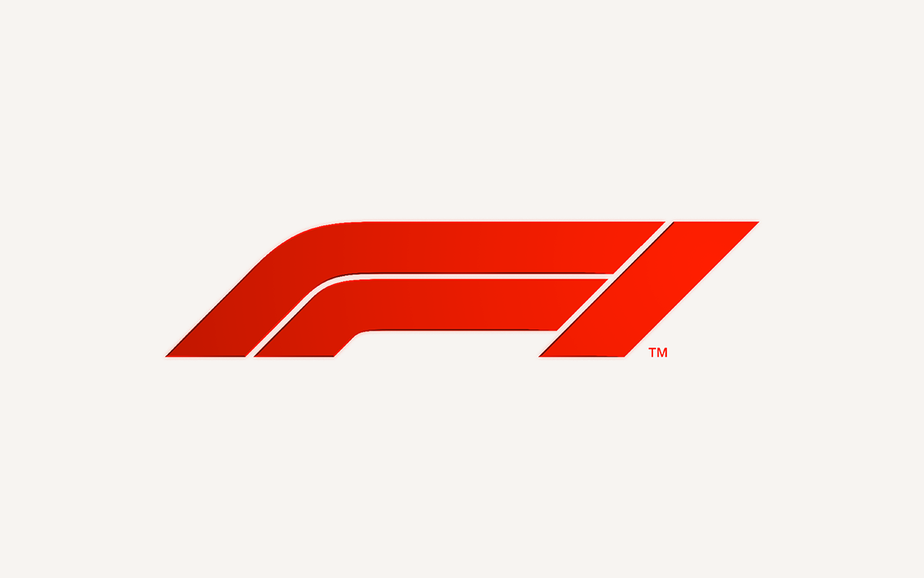

|  | Home | Pilotos | Circuitos | Sobre |
HistóriaUma paixão que passa de geração para geração. O maior evento automobilístico do universo. O foco de qualquer piloto é chegar até esta divisão. Os olhos do mundo em termos de velocidade estão nesta iniciativa. Já sabe do que estamos falando? Sim, a Fórmula 1 representa isso e muito mais. Trata-se do palco de rivalidades inesquecíveis, um espaço que concentra marcas reconhecidas internacionalmente e dinheiro, muito dinheiro por parte dos patrocinadores. A seguir será possível acompanhar um pouco da história da F1, curiosidades e números que ajudam a explicar o porquê de tanta paixão que esse esporte proporciona. |
|